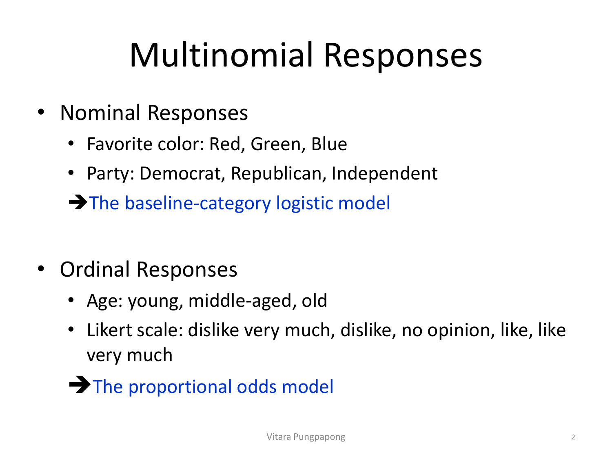
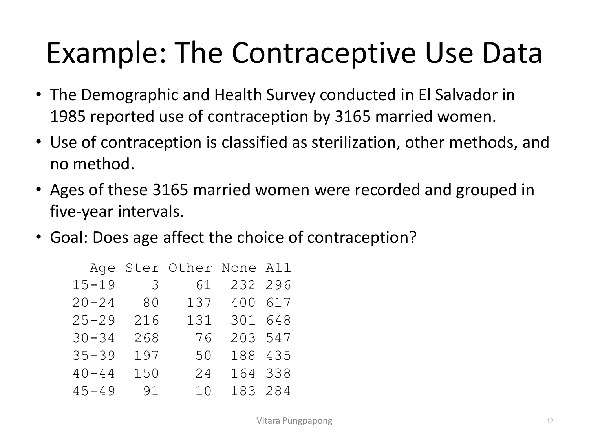
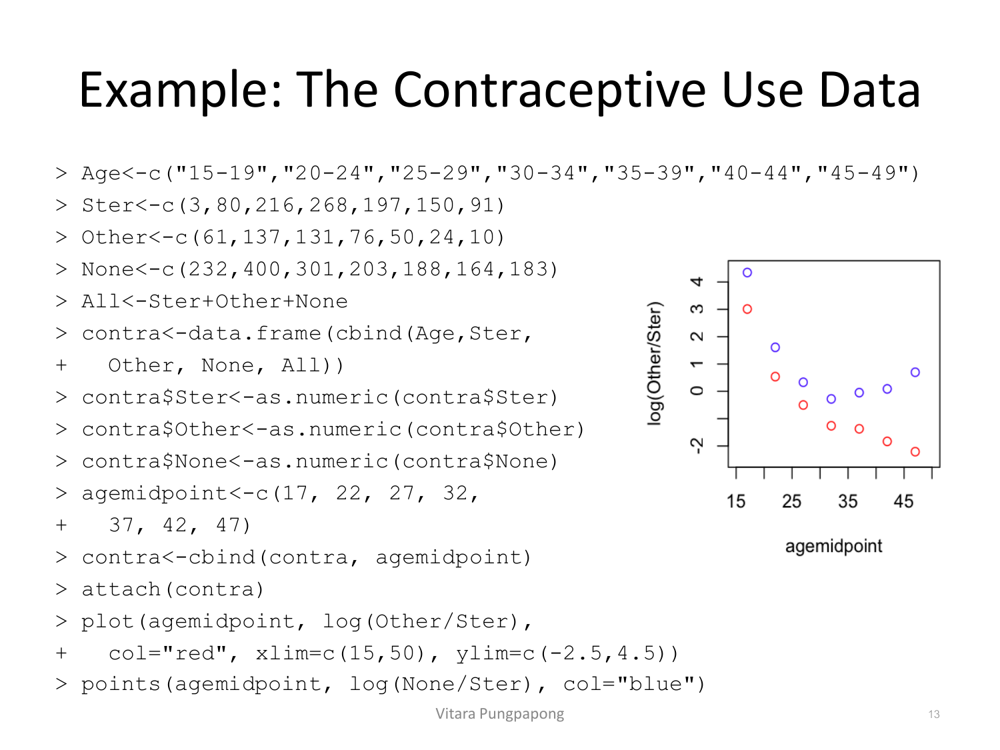
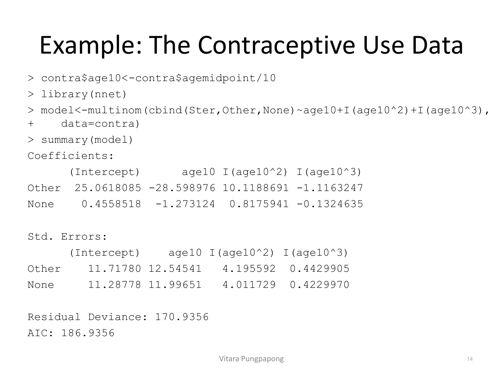
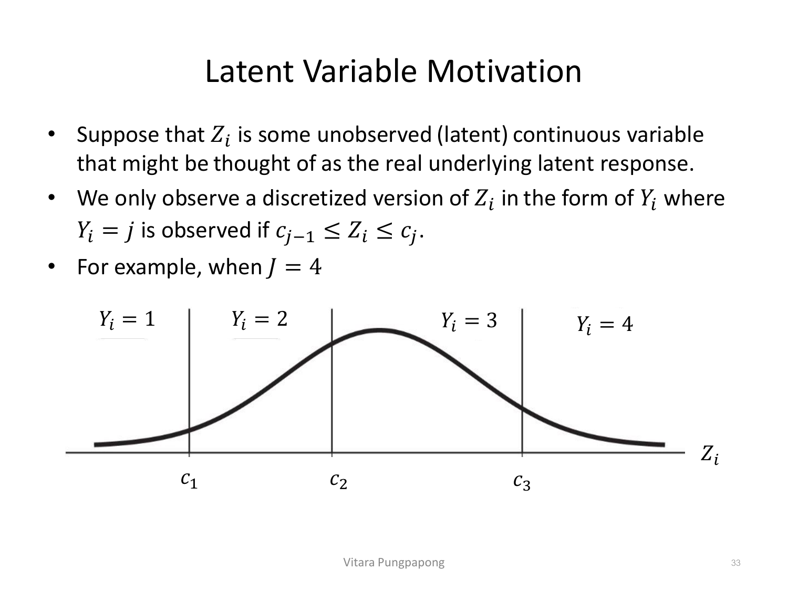
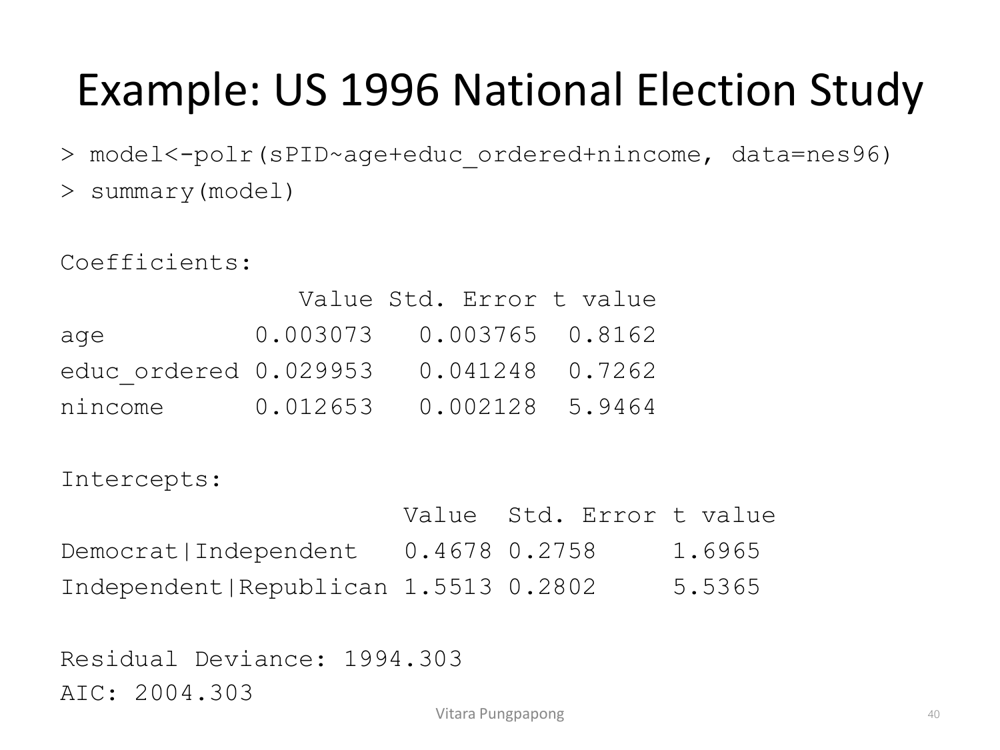
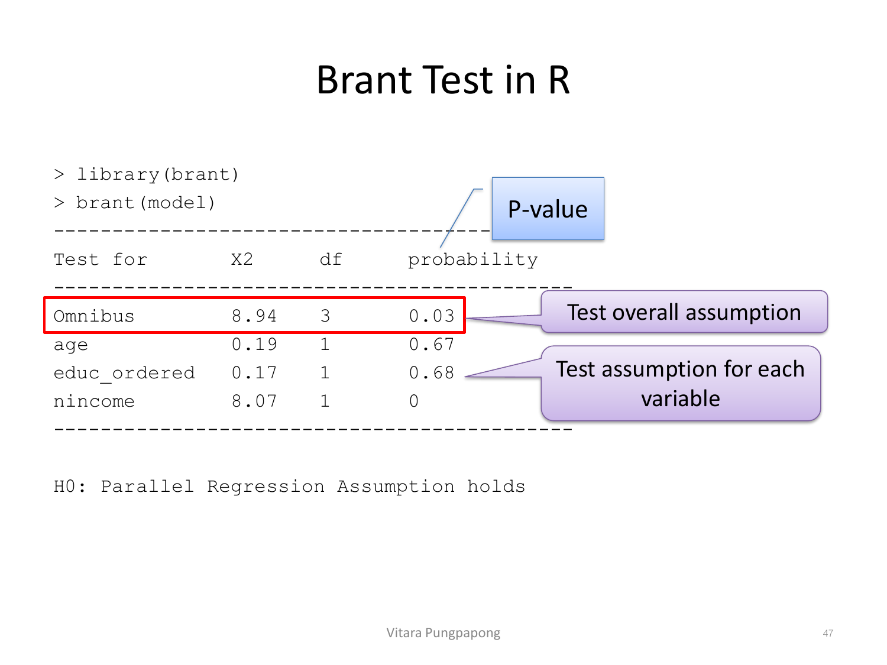
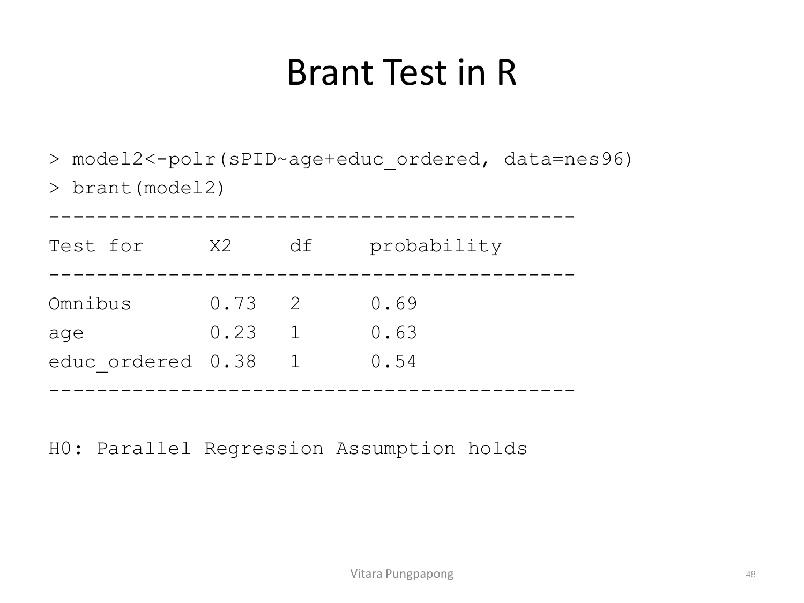

Lecture 12 — Multinomial Data
บทเรียนนี้ต่อยอดจาก Binary Logistic Regression (Lecture 9) ไปสู่ response ที่มีมากกว่า 2 category สไลด์แบ่งเป็น 2 เรื่องใหญ่ตามชนิดของ scale: Nominal response (หมวดหมู่ไม่มีลำดับ เช่น สีที่ชอบ, พรรคที่สังกัด) ใช้ baseline-category logistic model, และ Ordinal response (หมวดหมู่มีลำดับ เช่น อายุกลุ่ม, Likert scale) ใช้ proportional odds model — โมเดลทั้งสองมีสมการคนละแบบ และเขียนสมการผิดชนิดจะผิดทั้งข้อสอบ จึงเป็นเรื่องแรกที่ต้องแยกให้ออกก่อนเริ่ม. เป้าหมาย 4 อย่างของบทนี้: (1) เขียนสมการโมเดลทั้งสองแบบได้ถูกต้อง ทั้งที่ baseline-category logit ต้องเขียนหลายสมการพร้อมกัน (2) เช็ค assumption ของ proportional odds ได้ด้วย Brant Test จาก R output จริง (3) เขียนประโยคแปลผล coefficient ที่ระบุ baseline category เสมอ — จุดที่ต่างจาก binary logistic regression ชัดเจน (4) อ่าน output จาก multinom() และ polr() ได้ครบ
สไลด์เปิดเรื่องด้วยการแบ่ง response ที่มีมากกว่า 2 category ออกเป็น 2 กลุ่มตามว่ามี "ลำดับ" หรือไม่:

สังเกตตัวอย่างในภาพ: "สีที่ชอบ (แดง/เขียว/น้ำเงิน)" ไม่มีทางเรียงลำดับได้อย่างมีความหมาย — สลับตำแหน่งแดงกับน้ำเงินก็ไม่ทำให้อะไรเปลี่ยน จึงเป็นnominal ในทางกลับกัน "อายุ: young < middle-aged < old" มีลำดับที่ตายตัว สลับไม่ได้ จึงเป็นordinal — กฎการเลือกโมเดล: nominal ไปทาง baseline-category logistic model (หัวข้อ 3 เป็นต้นไป), ส่วน ordinal ไปทาง proportional odds model (หัวข้อ 10 เป็นต้นไป) ถึงแม้ทั้งคู่จะเป็น response ที่มีมากกว่า 2 category เหมือนกัน แต่สมการคนละสูตร คนละจำนวนพารามิเตอร์ — จะเห็นความต่างชัดเจนในหัวข้อ 10.
Binomial data: response มี 2 category, \(\pi = P(\text{Category 1}) = 1 - P(\text{Category 2})\). Multinomial data: response มี J category (J>2):
ข้อสังเกตสำคัญที่ใช้คำนวณ degrees of freedom ทั่วทั้งบทนี้: รู้แค่ J−1 probability ก็เพียงพอ เพราะตัวสุดท้ายคำนวณได้จาก \(\pi_J = 1 - \pi_1 - \pi_2 - \cdots - \pi_{J-1}\) — นี่คือเหตุผลที่โมเดลทุกแบบในบทนี้ (ทั้ง baseline-category logit และ proportional odds) มีแค่ J−1 สมการ ไม่ใช่ J สมการ.
ตัวอย่างคลาสสิกสองแบบที่สไลด์ยกมาเทียบ: (1) โยนเหรียญ n ครั้ง (binomial: Head/Tail, sum=n) — เมื่อ n=1 เรียก "Binary Classification" (2) ทอยลูกเต๋า n ครั้ง (multinomial: หน้า 1-6, sum=n) — เมื่อ n=1 เรียก "Multi-class Classification" ซึ่งโมเดล machine learning หลายตัว (decision tree, SVM, neural network) ทำได้ทั้งสองแบบ.
ในทางทฤษฎี Multinomial distribution เป็นสมาชิกของ exponential family distribution เช่นเดียวกับ Binomial (ที่ใช้ปูทางสู่ logistic regression ใน Lecture 9) — พิสูจน์ได้โดยจัดรูป pmf \(P(Y_1=y_1,\ldots,Y_J=y_J) = \dfrac{n!}{y_1!\cdots y_J!} \times \pi_1^{y_1}\cdots \pi_J^{y_J}\) ใหม่เป็นรูป exponential family พร้อม canonical parameter vector \(\theta_i = \left(\log(\pi_2/\pi_1), \ldots, \log(\pi_J/\pi_1)\right)^T\) — จุดสำคัญที่ได้จากการพิสูจน์นี้คือ canonical link ของ multinomial คือ \(\log(\pi_j/\pi_1)\) ซึ่งจะกลายเป็นสมการ baseline-category logit ในหัวข้อถัดไปพอดี (รายละเอียดพีชคณิตเต็มอยู่ในสไลด์หน้า 7-9 แต่ไม่ใช่จุดที่ข้อสอบเน้น — จำผลลัพธ์ "canonical link = log(π_j/π₁)" พอ).
เพราะ canonical link คือ \(\log(\pi_j/\pi_1)\) โมเดลจึงเลือก category หนึ่งเป็น baseline (โดยทั่วไปคือ category แรก) แล้วจับคู่ทุก category ที่เหลือกับ baseline สร้างเป็นสมการ logistic แยกกัน:
อ่านสมการนี้ให้ถูก: นี่ไม่ใช่สมการเดียว — ถ้ามี J=3 category จะได้ 2 สมการพร้อมกัน (j=2 กับ j=3) แต่ละสมการมีชุด β ของตัวเอง (\(\beta_{0j}, \beta_{1j}, \ldots, \beta_{pj}\) — สังเกต subscript j ที่ติดอยู่กับทุก β) นี่คือจุดที่ต่างจาก binary logistic regression ที่มีสมการเดียว: baseline-category logit ต้องเขียน J−1 สมการพร้อมกัน โดยแต่ละสมการเทียบ category นั้นกับ baseline ตัวเดียวกันเสมอ — และ "effect ของตัวแปร x จะเปลี่ยนไปถ้าเลือก baseline category ต่างกัน" (ตามที่สไลด์เน้นไว้ตรงๆ) เพราะสัมประสิทธิ์ทุกตัวถูกนิยามเทียบกับ baseline ที่เลือก ไม่ใช่ค่าสัมบูรณ์.
ในทางปฏิบัติ แม้ทฤษฎีจะใช้ IRLS ประมาณค่าได้เหมือน logistic regression ทั่วไป แต่ glm() ของ R ไม่รองรับ โมเดลนี้ — สไลด์ชี้ให้เห็นว่า baseline-category logistic model มองเป็น single-hidden-layer neural network ได้ จึงมีการ implement ไว้ในแพ็กเกจ nnet ผ่านฟังก์ชัน multinom() แทน (ไม่ใช่ glm(family=...) เหมือน Lecture 9).
J=3 category → มี J−1 = 2 สมการ พร้อมกัน (Republican vs Democrat, และ Independent vs Democrat):
\(\log\left[\dfrac{\pi_{\text{Republican}}(x)}{\pi_{\text{Democrat}}(x)}\right] = \beta_{0,\text{Rep}} + \beta_{1,\text{Rep}} \cdot \text{Income}\)
\(\log\left[\dfrac{\pi_{\text{Independent}}(x)}{\pi_{\text{Democrat}}(x)}\right] = \beta_{0,\text{Ind}} + \beta_{1,\text{Ind}} \cdot \text{Income}\)
ทั้งสองสมการเทียบกับ Democrat (baseline) เสมอ และมีชุดสัมประสิทธิ์ \((\beta_0, \beta_1)\) เป็นของตัวเอง คนละชุดกัน — ไม่ใช่ใช้ β ตัวเดียวกันทั้งสองสมการ
ข้อมูลจริงจาก Demographic and Health Survey ที่เอลซัลวาดอร์ปี 1985 สำรวจผู้หญิงแต่งงานแล้ว 3,165 คน แบ่งการใช้คุมกำเนิดเป็น 3 กลุ่ม (sterilization, other methods, no method) พร้อมช่วงอายุ (grouped ทุก 5 ปี) เป้าหมาย: อายุมีผลต่อการเลือกวิธีคุมกำเนิดหรือไม่?

อ่านแนวโน้มในตาราง: กลุ่มอายุ 15-19 มี Ster=3 คนเท่านั้นจาก 296 คน (~1%) แต่กลุ่มอายุ 30-34 มี Ster=268 จาก 547 คน (~49%) — สัดส่วนการทำหมันเพิ่มขึ้นชัดเจนตามอายุ ในขณะที่ Other methods กลับมีสัดส่วนสูงสุดที่อายุ 20-24 (137/617 ≈ 22%) แล้วลดลงเรื่อยๆ จนเหลือ 10/284 ≈ 3.5% ที่อายุ 45-49 — ความสัมพันธ์ระหว่างอายุกับแต่ละ category จึงไม่ใช่เส้นตรงแบบเดียวกันทั้งหมด (Ster เพิ่มขึ้นตลอด, Other ขึ้นแล้วลง) นี่คือเหตุผลที่โค้ดข้างล่างต้องใส่ทั้ง age10, \(\text{age10}^2\), และ \(\text{age10}^3\) เข้าไปในโมเดล ไม่ใช่แค่ age10 ตัวเดียว.
ก่อนฟิตโมเดล สไลด์ให้พล็อต log-odds เทียบกับ baseline (Ster) ก่อนเพื่อดูรูปแบบความสัมพันธ์ — \(\log(\text{Other}/\text{Ster})\) และ \(\log(\text{None}/\text{Ster})\) เทียบกับ agemidpoint:

อ่านพล็อต: ทั้งจุดแดง (\(\log(\text{Other}/\text{Ster})\)) และจุดน้ำเงิน (\(\log(\text{None}/\text{Ster})\)) เริ่มต้นสูง (~3-4) ที่อายุน้อย แล้วลดลงแบบโค้ง (ไม่ใช่เส้นตรง) จนติดลบที่อายุมาก — ค่า log-odds สูงแปลว่า Ster (baseline) มีโอกาสน้อยกว่าเทียบกับอีกสอง category ที่อายุน้อย ซึ่งตรงกับตารางข้างต้นพอดี (Ster=3 ที่อายุ 15-19 น้อยมาก) รูปทรงโค้งนี้คือเหตุผลเชิงประจักษ์ที่สนับสนุนการใส่พจน์ \(\text{age10}^2\) และ \(\text{age10}^3\) เข้าไปในโมเดล ไม่ใช่ตัดสินใจแบบสุ่ม.
ฟิตด้วย multinom() จากแพ็กเกจ nnet (baseline=Ster โดยอัตโนมัติเพราะเป็น category แรกในลำดับ):
> contra$age10<-contra$agemidpoint/10
> library(nnet)
> model<-multinom(cbind(Ster,Other,None)~age10+I(age10^2)+I(age10^3), data=contra)
อ่าน output ทีละส่วน: summary(model) ของ multinom() ให้ตาราง Coefficients สองแถว (Other, None) — นี่คือหลักฐานที่จับต้องได้ว่ามี 2 สมการพร้อมกัน ตามที่อธิบายในหัวข้อ 3 จริงๆ แต่ละแถวมีค่า Estimate ของตัวเอง (Intercept, age10, age10², age10³) พร้อม Std. Errors แยกตาราง — ต่างจาก summary(lm())/summary(glm()) ที่รวม estimate/SE/t-value/p-value ไว้ตารางเดียว multinom() ไม่พิมพ์ p-value ให้อัตโนมัติ (ต้องคำนวณ Wald test เองจาก Estimate/Std.Error หรือใช้ LRT แทน — ดูหัวข้อ 6) ส่วน Residual Deviance: 170.9356 และ AIC: 186.9356 ใช้เปรียบเทียบโมเดล เหมือน glm() ทุกประการ.
เขียนสมการฟิตแล้วให้ครบ (ให้ \(\hat{\pi}_1=P(\text{Ster})\), \(\hat{\pi}_2=P(\text{Other})\), \(\hat{\pi}_3=P(\text{None})\)):
การแปลผล (ตามสไลด์): intercept แทนความน่าจะเป็นของแต่ละวิธีคุมกำเนิดเมื่อ Age=0 (ต้องระวัง extrapolation เหมือนกับ intercept ใน SLR — Age=0 ไม่มีอยู่จริงในข้อมูลตัวอย่างนี้ ดังนั้นค่าตัวเลขนี้ไม่ควรตีความตรงๆ ในทางปฏิบัติ) ส่วนslope terms แทน log-odds ของการย้ายจาก baseline category (sterilization) ไปยัง other methods และ none ตามลำดับ ต่อการเปลี่ยนอายุ 1 หน่วยของ age10 (=10 ปี).
สมการหัวข้อ 3 ให้เฉพาะ log-odds เทียบกับ baseline แต่บางครั้งอยากรู้ log-odds ระหว่างสอง category ที่ไม่ใช่ baseline เลย เช่น "Other vs None" (ไม่ใช่ Ster) — คำนวณได้จากการลบสมการ:
นั่นคือเอาสัมประสิทธิ์ของ 2 สมการที่ฟิตไว้แล้วมาลบกันตรงๆ ไม่ต้องฟิตโมเดลใหม่ — ตัวอย่าง: log-odds ของ Other vs None จากโมเดล Contraceptive คือ \((25.06-0.46) + (-28.60-(-1.27))\cdot \text{Age10} + \cdots = 24.60 - 27.33\cdot \text{Age10} + \cdots\) และเพราะ \(\sum \pi_j(x_i)=1\) จึงไขว่ได้สูตร softmax ย้อนกลับมาเป็นความน่าจะเป็นแต่ละ category:
สูตรนี้คือที่มาของฟังก์ชัน predict(model, newdata, type="prob") ที่จะเห็นในหัวข้อ 7 — ไม่ต้องคำนวณมือ R ทำให้อัตโนมัติ แต่ต้องรู้ที่มาว่ามันมาจาก log-odds เทียบ baseline ทั้ง J−1 สมการพร้อมกัน.
วิธีทดสอบสมมติฐานของ baseline-category logit ใช้แนวทางเดียวกับ logistic regression ทั่วไปได้ (Lecture 9): (1) Wald's test จาก Estimate/Std.Error ในตาราง summary() — ทดสอบ β ตัวเดียว (2) LRT (Likelihood Ratio Test) — เทียบ nested models. สไลด์เน้นว่าการทดสอบ β ทีละตัวไม่ค่อยนิยม เพราะเมื่อตัดตัวแปร x หนึ่งตัวออกจากโมเดล จะกระทบสัมประสิทธิ์ของ x ตัวนั้นทั้ง J−1 สมการพร้อมกัน — LRT จึงเหมาะกว่าเพราะทดสอบผลรวมของการตัดตัวแปรทั้งหมดในครั้งเดียว ไม่ใช่ทดสอบทีละสมการแยกกัน.
ตัวอย่าง: ทดสอบนัยสำคัญของพจน์ \(\text{age10}^3\) ด้วย LRT — เทียบโมเดลเต็ม (มี age10³) กับโมเดลย่อ (ไม่มี age10³):
> model2<-multinom(cbind(Ster,Other,None)~age10+I(age10^2), data=contra)
> pchisq(deviance(model2)-deviance(model), model$edf-model2$edf, lower=F)
[1] 0.0003335562
# หรือใช้ anova() แทนก็ได้:
> anova(model2, model, test="Chisq")
Model Resid. df Resid. Dev Test Df LR stat. Pr(Chi)
1 age10 + I(age10^2) 8 5766.273 NA NA NA
2 age10 + I(age10^2) + I(age10^3) 6 5750.261 1 vs 2 2 16.0114 0.0003335562อ่าน output: pchisq(deviance(model2)-deviance(model), model$edf-model2$edf, lower=F) คือสูตร LRT ที่คุ้นเคยจาก logistic regression — เอา deviance ของโมเดลย่อ ลบ deviance ของโมเดลเต็ม แล้วเทียบกับ chi-square ที่ df = ผลต่างจำนวนพารามิเตอร์ (model$edf−model2$edf) ผลลัพธ์ p = 0.0003 น้อยกว่า 0.05 มาก → ปฏิเสธ \(H_0\) สรุปว่าพจน์ \(\text{age10}^3\) มีนัยสำคัญ ควรเก็บไว้ในโมเดล — ยืนยันตรงกันด้วย anova() ที่ให้ LR stat. = 16.0114, Pr(Chi) = 0.0003335562 ตัวเลขเดียวกันเป๊ะ.
ทำนายความน่าจะเป็นแต่ละ category ด้วย predict(..., type="prob") หรือทำนาย category ที่น่าจะเป็นที่สุดด้วย type="class" (default):
> predict(model, data.frame(age10=3), type="prob")
Ster Other None
0.2678515 0.3251770 0.4069715
> predict(model, data.frame(age10=3))
[1] None
Levels: Ster Other Noneที่ Age10=3 (อายุ 30 ปี): ความน่าจะเป็นของ None (40.7%) สูงกว่า Other (32.5%) และ Ster (26.8%) เล็กน้อย — predict() แบบไม่ระบุ type จึงเลือกตอบ "None" เพราะเป็น category ที่มีความน่าจะเป็นสูงสุด (ไม่ใช่ threshold 0.5 แบบ binary logistic — ในโมเดลหลาย category กฎคือ "เลือกความน่าจะเป็นสูงสุด" ไม่ใช่ "เกินครึ่ง").
Goodness-of-fit test เช็คว่าโมเดลโดยรวม fit กับข้อมูลดีแค่ไหน — วิธีต่างกันตามชนิดข้อมูล:
generalhoslem ฟังก์ชัน logitgof()# Grouped:
> 1-pchisq(deviance(model2), nrow(contra)*2-model2$edf)
[1] 0
# Ungrouped (ตัวอย่าง syntax):
library(generalhoslem)
mod <- multinom(gear ~ mpg + cyl, data = mtcars)
logitgof(mtcars$gear, fitted(mod), ord = FALSE)ผลลัพธ์ grouped-data GOF ของ model2 (ไม่มี age10³) ได้ p = 0 พอดี — ปฏิเสธ \(H_0\) ของ goodness-of-fit อย่างชัดเจน (โมเดลนี้ fit ข้อมูลได้ไม่ดี) ซึ่งสอดคล้องกับผล LRT ในหัวข้อ 6 ที่บอกว่าควรใส่ \(\text{age10}^3\) กลับเข้าไป — GOF ตัวนี้เป็นอีกหลักฐานที่ชี้ไปทางเดียวกัน: โมเดลไม่มี cubic term ยังไม่พอ.
logitgof() แทนสำหรับสัมประสิทธิ์ \(\hat{\beta}_{pj}\) (ตัวแปร \(X_p\) ในสมการของ category j):
"\(\exp(\hat{\beta}_{pj})\) คือตัวคูณ (multiplicative factor) ของการเปลี่ยนแปลง odds ของ category j เทียบกับ baseline category เมื่อ \(X_p\) เพิ่มขึ้น 1 หน่วย โดยตัวแปรอื่นคงที่"
ต้องระบุชื่อ baseline category ทุกครั้งที่แปลผล — เพราะสัมประสิทธิ์ตัวเดียวกันจะมีความหมายเปลี่ยนไปทันทีถ้าเลือก baseline คนละตัว (แตกต่างจาก binary logistic regression ใน Lecture 9 ที่มีแค่ 2 category ไม่ต้องพูดถึง "เทียบกับอะไร" เพราะมีทางเลือกเดียว — nominal ที่มี J>2 category ไม่มี "the" reference โดยธรรมชาติ ต้องประกาศเองเสมอว่าเทียบกับ category ไหน)
ตัวอย่างการแปลผลแบบเต็มจากโมเดล Contraceptive: สัมประสิทธิ์ของ age10 ในสมการ None (=−1.27) แปลว่า "เมื่ออายุเพิ่มขึ้น 10 ปี odds ของการไม่ใช้วิธีคุมกำเนิด (None) เทียบกับการทำหมัน (Ster, baseline) เปลี่ยนไปเป็น \(\exp(-1.27) \approx 0.28\) เท่าของเดิม (ลดลง) โดยคุมตัวแปรอื่นให้คงที่" — สังเกตว่าต้องพูดคำว่า "เทียบกับการทำหมัน (baseline)" เสมอ ถ้าตัดคำนี้ออกประโยคจะไม่สมบูรณ์และข้อสอบจะไม่ให้คะแนนเต็ม.
age10 ในสมการ Other (=−28.60, มาจากพจน์ age10 ก่อนคุม \(\text{age10}^2\) และ \(\text{age10}^3\) — สมมติพิจารณาแค่ผลของ age10 เดี่ยวๆ เพื่อฝึกโครงสร้างประโยค) จงเขียนประโยคแปลผลที่ถูกต้องครบองค์ประกอบเปลี่ยนมาที่ response แบบมีลำดับ (ordinal) — แทนที่จะสนใจ \(\pi_j = P(Y=j)\) ตรงๆ เหมือน nominal สไลด์ให้ทำงานกับความน่าจะเป็นสะสม (cumulative probability) แทน เพราะใช้ประโยชน์จากลำดับได้:
โมเดล Cumulative Logistic Model หรือชื่อที่นิยมกว่าคือ Proportional Odds Model:
เทียบกับสมการ baseline-category logit ในหัวข้อ 3 มีข้อต่างสำคัญที่ข้อสอบชอบถามมาก 2 ข้อ: (1) \(\beta\) ไม่มี subscript j — มีชุดสัมประสิทธิ์ slope ชุดเดียว ใช้ร่วมกันทุก j (ต่างจาก baseline-category ที่แต่ละ j มี \(\beta_j\) ของตัวเอง) (2) มีแค่ intercept \(\theta_j\) เท่านั้นที่เปลี่ยนไปตาม level j — นี่คือที่มาของชื่อ "proportional odds": slope เดียวกันสำหรับทุกคู่เปรียบเทียบ มีแค่จุดตัด (threshold) ที่ต่างกัน. จำนวนพารามิเตอร์จึงน้อยกว่า baseline-category logit มาก: proportional odds มี \((J-1) + p\) พารามิเตอร์ ในขณะที่ baseline-category logit มี \((J-1)\times(p+1)\) พารามิเตอร์ (ทุก j มีทั้ง intercept และ slope ของตัวเอง).
สไลด์อธิบายที่มาของสมการนี้ผ่านแนวคิดตัวแปรแฝง (latent variable) — สมมติว่ามีตัวแปรต่อเนื่อง \(Z_i\) ที่สังเกตไม่ได้อยู่เบื้องหลัง สิ่งที่สังเกตได้จริงคือ Y_i ที่เป็นการ "ตัดช่วง" Z_i ด้วยจุดตัด (cutpoint) \(c_1 < c_2 < c_3\):

อ่านภาพ: ระฆังคว่ำทั้งลูกคือการแจกแจงของ \(Z_i\) ที่มองไม่เห็นจริง — เราสังเกตได้แค่ว่า \(Z_i\) ตกอยู่ในช่วงไหนจาก 4 ช่วงที่แบ่งด้วย \(c_1, c_2, c_3\) แล้วบันทึกเป็น Y_i=1,2,3,4 ตามลำดับ เช่น ในแบบสำรวจความพึงพอใจ "พอใจมาก" อาจจะแปลว่า "ความรู้สึกจริง (Z) สูงกว่าจุดตัด \(c_3\)" — Z ต่อเนื่องแต่เราวัดได้แค่ช่วงหยาบๆ ผ่านแบบสอบถาม. ด้วยแนวคิดนี้ พิสูจน์ได้ว่าถ้า \(\varepsilon_i\) (ส่วนสุ่มของ \(Z_i\)) มีการแจกแจงแบบ logistic (cdf = \(e^x/(1+e^x)\)) จะได้สมการ proportional odds พอดี — ตรงกับที่มาของสมการ baseline-category logit ในหัวข้อ 2 ที่มาจาก exponential family เช่นกัน แต่คนละที่มา คนละโมเดล.
ในทาง R ใช้ฟังก์ชัน polr() จากแพ็กเกจ MASS (ไม่ใช่ multinom() จาก nnet เหมือนโมเดล nominal):
> library(MASS)
> polr(formula, data, weights, start, ..., subset, na.action,
+ contrasts = NULL, Hess = FALSE, model = TRUE,
+ method = c("logistic", "probit", "cloglog", "cauchit"))ฟังก์ชันมาตรฐานที่ใช้กับ object จาก polr() คล้ายกับ lm/glm: predict, summary, anova, vcov, confint, extractAIC — argument method เลือกได้ว่าจะใช้ link แบบไหน (default "logistic" ให้ proportional odds model ตามที่อธิบายมา; "probit" ให้โมเดลแบบอื่นที่ไม่ครอบคลุมในบทนี้).
ข้อมูลย่อยของ 1996 American National Election Study (944 observation, 10 ตัวแปร) สนใจ 4 ตัวแปร: PID (party identification, ordered factor: strDem < weakDem < indDem < indind < indRep < weakRep < strRep), age, educ (ordered factor), income (ordered factor) เป้าหมาย: อายุ การศึกษา และรายได้ มีผลต่อ party identification อย่างไร?
เตรียมข้อมูล — รวม PID 7 ระดับเป็น 3 กลุ่ม (Democrat/Independent/Republican) และแปลง income/education เป็นตัวเลข:
> library(faraway); data(nes96)
> sPID<-nes96$PID
> levels(sPID)<-c("Democrat","Democrat","Independent","Independent",
+ "Independent","Republican","Republican")
> summary(sPID)
Democrat Independent Republican
380 239 325
> inca<-c(1.5,4,6,8,9.5,10.5,11.5,12.5,13.5,14.5,16,18.5,21,23.5,27.5,
+ 32.5,37.5,42.5,47.5,55,67.5,82.5,97.5,115)
> nincome<-inca[unclass(nes96$income)]
> educ_ordered<-as.numeric(nes96$educ)
> nes96<-cbind(nes96,sPID,nincome,data=educ_ordered)ฟิตโมเดลด้วย polr() — response sPID มี 3 ระดับเรียงลำดับ Democrat < Independent < Republican:

อ่าน output: ต่างจาก multinom() ชัดเจน — ตาราง Coefficients มีแค่แถวเดียวต่อตัวแปร (age, educ_ordered, nincome) ไม่ใช่หลายแถวตาม category เพราะ \(\beta\) ใช้ร่วมกันทุก level (proportional odds!) ส่วนตาราง Intercepts มี 2 แถว (Democrat|Independent, Independent|Republican) ตรงกับ J−1=2 threshold ที่แบ่ง 3 category — สังเกตว่า nincome มี t value = 5.9464 สูงกว่า age (0.8162) และ educ_ordered (0.7262) มาก บอกใบ้ว่า income น่าจะเป็นตัวแปรสำคัญที่สุด (ยืนยันด้วย LRT/AIC ในหัวข้อ 11).
เขียนสมการให้ครบ — ให้ \(\gamma_1 = P(Y\leq 1) = P(\text{Democrat})\), \(\gamma_2 = P(Y\leq 2) = P(\text{Democrat})+P(\text{Independent})\), \(\gamma_3 = P(Y\leq 3) = 1\):
สังเกตว่าสัมประสิทธิ์ของ Age, Educ, Income เหมือนกันทุกตัวอักษรในทั้งสองสมการ — มีแค่ intercept (0.47 vs 1.55) ที่ต่างกัน นี่คือภาพที่จับต้องได้ของ "proportional odds" (\(\beta\) ชุดเดียว, \(\theta_j\) เปลี่ยนตาม j) ตรงข้ามกับตัวอย่าง Contraceptive ในหัวข้อ 4 ที่สัมประสิทธิ์ของ age10 ต่างกันโดยสิ้นเชิงระหว่างสมการ Other กับ None.
ทดสอบว่าตัวแปรบางตัว "ไม่จำเป็น" ด้วย LRT เหมือนหัวข้อ 6 — ทดสอบโมเดลเต็ม (age+educ_ordered+nincome) กับโมเดลที่ตัด nincome ออก:
> pchisq(deviance(model2)-deviance(model), model$edf-model2$edf, lower=F)
[1] 0.5888053
> model2<-step(model)
> summary(model2)
Coefficients:
Value Std. Error t value
nincome 0.01312 0.001971 6.657
Intercepts:
Value Std. Error t value
Democrat|Independent 0.2091 0.1123 1.8627
Independent|Republican 1.2916 0.1201 10.7526
Residual Deviance: 1995.363
AIC: 2001.363อ่าน output: step(model) ใช้ AIC เป็นเกณฑ์เลือกตัวแปรอัตโนมัติแบบ stepwise — ผลลัพธ์คือโมเดลที่เหลือแค่ nincome ตัวแปรเดียว (ตัด age และ educ_ordered ออกไปทั้งคู่) เพราะ AIC ของโมเดลย่อ (2001.363) ต่ำกว่า AIC ของโมเดลเต็ม (2004.303 จากหัวข้อ 10) — สอดคล้องกับสัญญาณจาก t-value ในหัวข้อ 10 ที่ nincome สูงกว่าตัวแปรอื่นมาก. ข้อควรระวัง: AIC ต่ำกว่าไม่ได้แปลว่า "ดีกว่าทุกด้าน" เสมอไป — โมเดลที่ตัด age/educ ออกอาจจะสูญเสียข้อมูลบางแง่มุมที่นักวิจัยสนใจ (เช่น ผลของอายุต่อ party identification) แม้ทางสถิติจะไม่ significant ก็ตาม — ต้องชั่งน้ำหนักกับเป้าหมายของงานวิจัยด้วย ไม่ใช่ยึด AIC อย่างเดียว.
ทักษะที่ 2 ของบทนี้: proportional odds model มีassumption ที่ต้องเช็คทุกครั้ง ต่างจาก baseline-category logit ที่ไม่มี assumption เรื่องความเท่ากันของ slope (เพราะมันไม่ได้ตั้งสมมติฐานนั้นตั้งแต่แรก) — assumption นี้คือproportional odds (parallel regression) assumption: สัมประสิทธิ์ β ต้องเท่ากันจริงในทุก cumulative logit ตรวจสอบด้วย Brant Test (Brant, 1990):
รันกับโมเดลเต็ม (age+educ_ordered+nincome) จากหัวข้อ 10:

อ่าน output: แถว Omnibus คือการทดสอบ assumption โดยรวมทั้งโมเดล — \(X^2 = 8.94, df = 3, p = 0.03\) น้อยกว่า 0.05 → ปฏิเสธ \(H_0\) สรุปว่า proportional odds assumption ถูกละเมิดในโมเดลนี้ ดูรายตัวแปรว่าใครเป็นสาเหตุ: age (p=0.67) และ educ_ordered (p=0.68) แต่ละตัวไม่ได้ละเมิดเลย (p สูงมาก) แต่ nincome มี \(p \approx 0\) — สรุปได้ว่าnincome คือตัวการที่ทำให้ assumption ล้มเหลว ไม่ใช่ age หรือ educ_ordered.
ทางแก้ที่สไลด์แสดง: ตัด nincome ออกแล้วเช็คซ้ำกับโมเดล age+educ_ordered เท่านั้น:

อ่านผล: หลังตัด nincome ออก Omnibus เปลี่ยนจาก p=0.03 เป็น p=0.69 — ไม่ปฏิเสธ \(H_0\) อีกต่อไป assumption กลับมาเป็นจริงสำหรับ age และ educ_ordered เท่านั้น นี่คือรูปแบบ "diagnostic → remedy" ที่คุ้นเคยจาก assumption checking ใน SLR/MLR: เจอปัญหา (p<0.05 ใน Brant test) → หาตัวการ (ดู p-value รายตัวแปร) → ตัดตัวแปรที่เป็นปัญหาออก → เช็คซ้ำ แต่มีข้อแลกเปลี่ยนสำคัญที่ต้องชั่งน้ำหนัก: nincome คือตัวแปรที่มี t-value สูงที่สุดและมีนัยสำคัญที่สุดในหัวข้อ 10-11 การตัดออกทำให้ assumption ผ่าน แต่สูญเสียตัวแปรที่ทำนายได้ดีที่สุดไปด้วย — นักวิเคราะห์ต้องตัดสินใจว่าจะยอมรับโมเดลที่ผิด assumption เล็กน้อยแต่ทำนายดี หรือโมเดลที่ assumption ผ่านแต่ทำนายได้แย่ลง (อาจพิจารณาโมเดลอื่น เช่น baseline-category logit ที่ไม่มี assumption นี้ตั้งแต่แรก แทนที่จะตัดตัวแปรทิ้ง).
ตัวอย่างการแปลผลสัมประสิทธิ์ของ nincome จากโมเดลย่อ (นิ่งแล้วหลัง step() ในหัวข้อ 11, \(\hat{\beta}=0.01312\)):
สังเกตโครงสร้างประโยค: proportional odds modelไม่ต้องระบุ "baseline category" แบบ nominal model เพราะไม่มี baseline — แต่ต้องพูดถึงทิศทางของการเปรียบเทียบตามลำดับ แทน ("moving from lower category to higher category") เพราะทุกคู่เปรียบเทียบ (Democrat|Independent และ Independent|Republican) ใช้ β ตัวเดียวกัน จึงพูดรวมเป็นประโยคเดียวครอบคลุมทุก threshold ได้เลย — นี่คือความต่างสำคัญจาก nominal model ในหัวข้อ 8 ที่ต้องระบุ baseline category ชัดเจนเสมอ.
ทำนายความน่าจะเป็นด้วย ilogit() (inverse logit) จาก intercept โดยตรง — ตัวอย่างที่ income=$0:
> ilogit(0.2091)
[1] 0.5520854
> ilogit(1.2916)-ilogit(0.2091)
[1] 0.2323325อ่านการคำนวณ: \(\text{ilogit}(0.2091) = \hat{\gamma}_1 = P(Y\leq \text{Democrat}) = 0.552\) คือความน่าจะเป็นสะสมถึง Democrat โดยตรง (=P(Democrat) เพราะเป็น category แรก) ส่วน P(Independent) ต้องลบสองค่าสะสม: \(\hat{\gamma}_2 - \hat{\gamma}_1 = P(Y\leq \text{Independent}) - P(Y\leq \text{Democrat}) = \text{ilogit}(1.2916)-\text{ilogit}(0.2091) = 0.232\) — วิธีคิดนี้ (ลบ cumulative probability ที่ติดกัน) เป็นวิธีมาตรฐานในการดึงความน่าจะเป็นของ category เดี่ยวๆ ออกจากโมเดล cumulative logit ต่างจาก baseline-category logit ที่ softmax formula ให้ π_j ตรงๆ อยู่แล้ว.
ทำนายด้วยฟังก์ชัน predict() โดยตรง (ไม่ต้องคำนวณมือ) — ให้ทั้ง prob และ class:
> predict(model, newdata=data.frame(age=50, educ_ordered=4,
+ nincome=50), type="prob")
Democrat Independent Republican
0.3921499 0.2637804 0.3440697
> predict(model, newdata=data.frame(age=50, educ_ordered=4,
+ nincome=50), type="class")
[1] Democrat
Levels: Democrat Independent Republicanคนอายุ 50 ปี การศึกษาระดับ 4 รายได้ $50,000 มีโอกาส Democrat สูงสุด (39.2%) แม้จะไม่ถึงครึ่ง (ไม่เกิน 50%) แต่สูงกว่าอีกสอง category ที่เหลือ (26.4% และ 34.4%) — type="class" จึงตอบ Democrat ตามกฎ "เลือกความน่าจะเป็นสูงสุด" เหมือนกับ multinom() ในหัวข้อ 7.
multinom() vs proportional odds ด้วย polr()), เขียนสมการ baseline-category logit ที่มี J−1 สมการพร้อมกันได้ (คนละ β ต่อ category), เขียนสมการ proportional odds ที่ β ชุดเดียวแต่ θ_j เปลี่ยนตาม level ได้, แปลผลสัมประสิทธิ์ baseline-category logit โดยระบุ baseline category เสมอ, อ่าน Brant test เพื่อเช็ค proportional odds assumption และรู้ทางแก้เมื่อ assumption ล้มเหลว, และอ่าน output จาก summary()/predict()/LRT/GOF ของทั้งสองโมเดลได้ครบ — ทักษะเหล่านี้จะขยายผลต่อไปใน Lecture 13 (Other GLMs)
ตารางนี้ไล่ทุกหน้าของ Lecture12.pdf ตั้งแต่หน้า 1 ถึง 40 (นับตามลำดับหน้าจริงของไฟล์ PDF — ไม่ใช่เลขหน้าที่พิมพ์กำกับไว้ในสไลด์ ซึ่งกระโดดจาก 22 ไป 31 เพราะเป็นเลขหน้าเดิมจากสไลด์ต้นฉบับที่ถูกตัดบางส่วนออกก่อนทำเป็นเอกสารนี้) หน้าที่มี ✓ ถูกอธิบายและ/หรือใส่รูปในเนื้อหาข้างบนแล้ว ส่วนที่เหลือ (etc) เป็นหน้าปก/หน้าคั่น/หน้าว่างที่ไม่มีเนื้อหาทฤษฎีใหม่ให้ทำ quiz เพิ่ม
| หน้า | เนื้อหา | สถานะ |
|---|---|---|
| 1 | ปกเรื่อง "Lecture 12: Multinomial Data" | etc — ปก |
| 2 | Multinomial Responses — ภาพรวม Nominal vs Ordinal + ตัวอย่าง | ✓ หัวข้อ 1 (มีรูป) |
| 3 | หน้าคั่น "Nominal Response" | etc — หน้าคั่น |
| 4 | Multinomial Responses — นิยาม \(\pi_j\), \(\sum \pi_j=1\), J−1 พอ | ✓ หัวข้อ 2 |
| 5 | Classic Examples — Binomial: โยนเหรียญ n ครั้ง | ✓ หัวข้อ 2 |
| 6 | Classic Examples — Multinomial: ทอยลูกเต๋า n ครั้ง | ✓ หัวข้อ 2 |
| 7 | Multinomial Distribution — รูป exponential family | ✓ หัวข้อ 2 (สรุปย่อ) |
| 8 | Multinomial Distribution — pmf และการจัดรูป | ✓ หัวข้อ 2 (สรุปย่อ) |
| 9 | Multinomial Distribution — redefine \(\theta_i\), canonical parameter | ✓ หัวข้อ 2 (สรุปย่อ) |
| 10 | Multinomial Regression — canonical link, baseline-category logistic model, multinom() ใน nnet | ✓ หัวข้อ 2-3 |
| 11 | Nominal Responses: Baseline-Category Logistic Models — สมการหลัก | ✓ หัวข้อ 3 |
| 12 | Example: The Contraceptive Use Data — ตารางข้อมูล | ✓ หัวข้อ 4 (มีรูป) |
| 13 | Example: Contraceptive Use — โค้ด R + log-odds plot | ✓ หัวข้อ 4 (มีรูป) |
| 14 | Example: Contraceptive Use — multinom() summary() output | ✓ หัวข้อ 4 (มีรูป) |
| 15 | Example: Contraceptive Use — Fitted Model equations + interpret | ✓ หัวข้อ 4 |
| 16 | หน้าว่าง (ไม่มีเนื้อหา) | etc — หน้าว่าง |
| 17 | Baseline-Category Logistic Models — สูตร logit คู่ใดๆ + softmax formula | ✓ หัวข้อ 5 |
| 18 | Inference approaches — Wald's test vs LRT | ✓ หัวข้อ 6 |
| 19 | Example: Contraceptive Use — LRT test สำหรับ cube term | ✓ หัวข้อ 6 |
| 20 | Example: Contraceptive Use — Prediction predict() | ✓ หัวข้อ 7 |
| 21 | Goodness-of-fit Test — Grouped data | ✓ หัวข้อ 7 |
| 22 | Goodness-of-fit Test — Ungrouped data (Hosmer-Lemeshow extension) | ✓ หัวข้อ 7 |
| 23 | หน้าคั่น "Ordinal Response" | etc — หน้าคั่น |
| 24 | Ordinal Responses: Cumulative Logistic Models — \(\gamma_j\), สมการ proportional odds | ✓ หัวข้อ 9 |
| 25 | Latent Variable Motivation — ภาพระฆังกับ cutpoints c1,c2,c3 | ✓ หัวข้อ 9 (มีรูป) |
| 26 | Latent Variable Motivation (cont.) — ที่มาสมการ logit link | ✓ หัวข้อ 9 (สรุปย่อ) |
| 27 | Proportional Odds Model — สมการสุดท้าย + ที่มาชื่อ | ✓ หัวข้อ 9 |
| 28 | Proportional Odds Model in R — polr() ในแพ็กเกจ MASS | ✓ หัวข้อ 9 |
| 29 | Example: US 1996 National Election Study — แนะนำตัวแปร | ✓ หัวข้อ 10 |
| 30 | Example: US 1996 — โค้ด R เตรียมข้อมูล (head, sPID) | ✓ หัวข้อ 10 |
| 31 | Example: US 1996 — โค้ด R เตรียมข้อมูล (educ table) | ✓ หัวข้อ 10 (สรุปย่อ) |
| 32 | Example: US 1996 — polr() summary() output | ✓ หัวข้อ 10 (มีรูป) |
| 33 | Example: US 1996 — Response variable Y levels + model equations | ✓ หัวข้อ 10 |
| 34 | Example: US 1996 — Testing nested models + AIC step() selection | ✓ หัวข้อ 11 |
| 35 | Goodness-of-fit Test — grouped/ungrouped, Hosmer-Lemeshow ordinal output | ✓ หัวข้อ 7 (อ้างอิงรูปแบบเดียวกัน) |
| 36 | Example: US 1996 — Interpretation (odds ratio income, predicted prob) | ✓ หัวข้อ 13 |
| 37 | Example: US 1996 — Prediction predict() type=prob/class | ✓ หัวข้อ 13 |
| 38 | Assessing the Proportional Odds Assumption — Brant Test นิยาม H0/H1 | ✓ หัวข้อ 12 |
| 39 | Brant Test in R — โมเดลเต็ม (age+educ_ordered+nincome) | ✓ หัวข้อ 12 (มีรูป) |
| 40 | Brant Test in R — โมเดลย่อ (ตัด nincome ออก) | ✓ หัวข้อ 12 (มีรูป) |
สงสัยตรงไหน ถามได้เลยในแชท — ผมเป็นผู้สอนของคุณ ถามซ้ำได้ ถามลึกได้ ไม่ต้องเกรงใจ